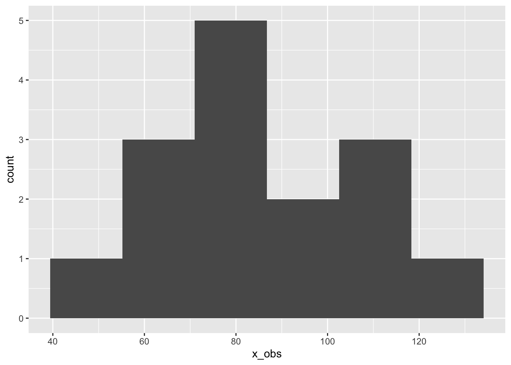
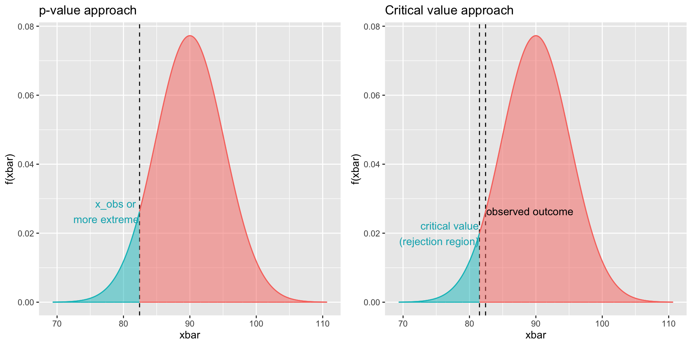
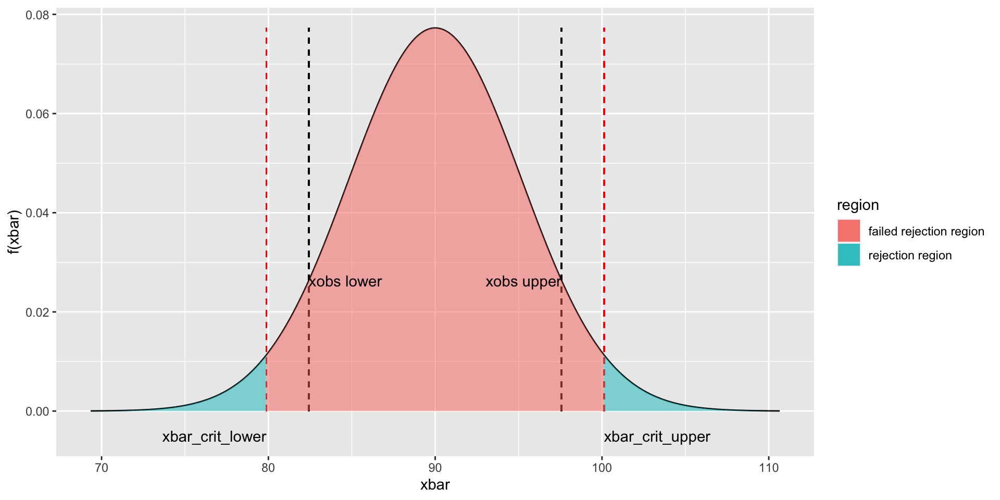

18 Normal test
Consider an experiment in which a rat is placed into a maze and given the chance to search for a bit of cheese hidden somewhere in the maze. After much training, the researchers are interested in assessing whether or not the animal has learned where the cheese is hidden. The researchers also know that rats without any training whatsoever find the cheese on average in 90 seconds with a standard deviation of 20 seconds. They perform 15 trials and measure the time to cheese on each trial. The data are as follows:

1. Specify the null and alternative hypotheses (\(H_0\) and \(H_1\)) in terms of a distribution and population parameter.
If the rat has learned something about where to find the cheese, then we expect it’s time to be less than that of naive rats, which we are told is 90 seconds. This leads to the following hypotheses.
\[ H_0: \mu = 90 \\ H_1: \mu < 90 \]
2. Specify the type I error rate – denoted by the symbol \(\alpha\) – you are willing to tolerate.
\[ \alpha = 0.05 \]
3. Specify the sample statistic that you will use to estimate the population parameter in step 1 and state how it is distributed under the assumption that \(H_0\) is true.
\[ \widehat{\mu} = \bar{x} \\ \bar{x} \sim \mathcal{N}(\mu_{\bar{x}}, \sigma_{\bar{x}}) \]
Since we are the sample mean \(\bar{x}\) to estimate \(\mu\), the sampling distribution of our test statistic is the distribution of sample means. This is great news because we know from previous lectures how the mean and variance of the distribution of sample means \(\bar{x}\) relates to the mean and variance of our origin distribution \(x\). In particular, we know:
\[ \mu_{\bar{x}} = \mu_{x} \\ \sigma_{\bar{x}} = \frac{\sigma_{x}}{\sqrt{n}} \]
We can now inspect the sampling distribution under the assumption that \(H_0\) is true, and inspect how likely the observed \(\bar{x}\) is to be sampled from this distribution.

4. Obtain a random sample and use it to compute the sample statistic from step 3. Call this value \(\widehat{\theta}_{\text{obs}}\)
In this example, \(\widehat{\theta}_{\text{obs}}\) corresponds to the observed sample mean. The data, sampled from the random variable \(X\) is given by the following times:
## [1] 105.25909 73.47533 106.59599 105.44859 88.29283 49.20100 61.42866
## [8] 74.10559 79.88466 128.09307 95.27187 64.01982 57.04686 74.21077
## [15] 74.01570Thus, the observed sample mean \(\bar{x}_{\text{obs}}\), sampled from the random variable \(\bar{X}\), is obtained as follows:
- Therefore, \(\bar{x}_{\text{obs}}=\) 82.4233202
5. If \(\widehat{\theta}_{\text{obs}}\) is very unlikely to occur under the assumption that \(H_0\) is true, then reject \(H_0\). Otherwise, do not reject \(H_0\).
When computing the p-value, we will turn to pnorm(). From the
plot above, and from reasoning about the alternative hypothesis,
we see that we need lower.tail=TRUE.
mu_x <- 90
sig_x <- 20
mu_x_bar <- mu_x
sig_x_bar <- sig_x / sqrt(n)
## p-value
pval <- pnorm(x_bar_obs, mu_x_bar, sig_x_bar, lower.tail=TRUE)
pval## [1] 0.07115842## [1] 81.50601It is easy to decide whether or not to reject \(H_0\) based on
the p-value or the critical region, but it sure would be nice
if R gave us a one liner like binom.test(). Unfortunately,
in the case of a normal sampling distribution, no such R function
exists. The reason for this is that to have a normal \(\bar{x}\)
sampling distribution, you have to know both the mean and the variance
of the \(H_0\) distribution. The mean is specified by \(H_0\) so is
no issue, but we rarely are in a situation to know the population
variance of X, and we therefore have to estimate it. This leads
us to the famous t-test.
18.1 Two-tailed Normal test
Last lecture we considered an experiment in which a rat is placed into a maze and given the chance to search for a bit of cheese hidden somewhere in the maze. The researchers know that rats without any training whatsoever find the cheese on average in 90 seconds with a standard deviation of 20 seconds. After much training, the researchers are interested in assessing whether or not the animal has learned where the cheese is hidden or on the contrary, if the animal has become frustrated and is taking longer than baseline.
1. Specify the null and alternative hypotheses (\(H_0\) and \(H_1\)) in terms of a distribution and population parameter.
\[ H_0: \mu = 90 \\ H_1: \mu \neq 90 \]
2. Specify the type I error rate – denoted by the symbol \(\alpha\) – you are willing to tolerate.
\[ \alpha = 0.05 \]
3. Specify the sample statistic that you will use to estimate the population parameter in step 1 and state how it is distributed under the assumption that \(H_0\) is true.
\[ \widehat{\mu} = \bar{x} \\ \bar{x} \sim \mathcal{N}(\mu_{\bar{x}}, \sigma_{\bar{x}}) \\ \mu_{\bar{x}} = \mu_{x} \\ \sigma_{\bar{x}} = \frac{\sigma_{x}}{\sqrt{n}} \]
4. Obtain a random sample and use it to compute the sample statistic from step 3. Call this value \(\widehat{\theta}_{\text{obs}}\)
The researchers perform 15 trials and measure the time to cheese on each trial. The data are as follows:
xobs <- c(105.25909, 73.47533, 106.59599, 105.44859, 88.29283,
49.20100, 61.42866, 74.10559, 79.88466, 128.09307,
95.27187 ,64.01982 ,57.04686 ,74.21077, 74.01570)
xbarobs <- mean(xobs)5. If \(\widehat{\theta}_{\text{obs}}\) is very unlikely to occur under the assumption that \(H_0\) is true, then reject \(H_0\). Otherwise, do not reject \(H_0\).
n <- 15
mux <-90
sigx <- 20
muxbar <- 90
sigxbar <- sigx / sqrt(n)
xbarobs_upper <- -(xbarobs - mux) + mux
xbarobs_lower <- xbarobs
xbar_crit_upper <- qnorm(0.05/2, muxbar, sigxbar, lower.tail=FALSE)
xbar_crit_lower <- qnorm(0.05/2, muxbar, sigxbar, lower.tail=TRUE)
# compute p-value by hand
pval_upper <- pnorm(xbarobs_upper, muxbar, sigxbar, lower.tail=FALSE)
pval_lower <- pnorm(xbarobs_lower, muxbar, sigxbar, lower.tail=TRUE)
pval <- pval_upper + pval_lower
pval## [1] 0.1423169